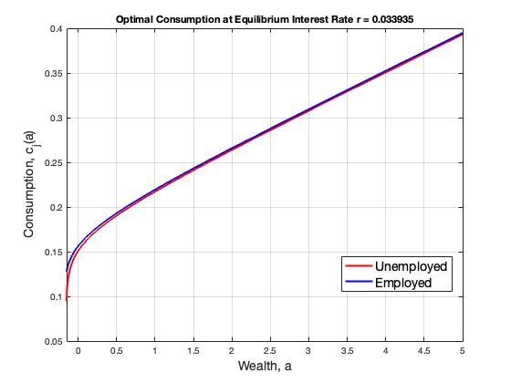
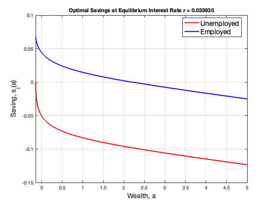
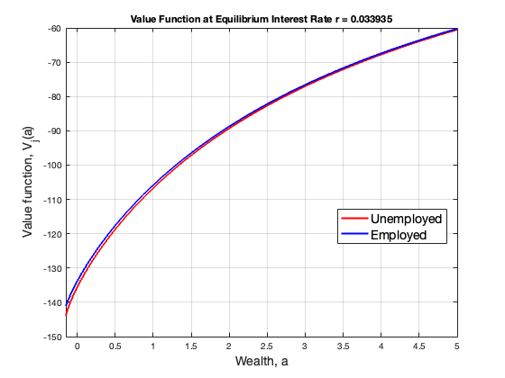
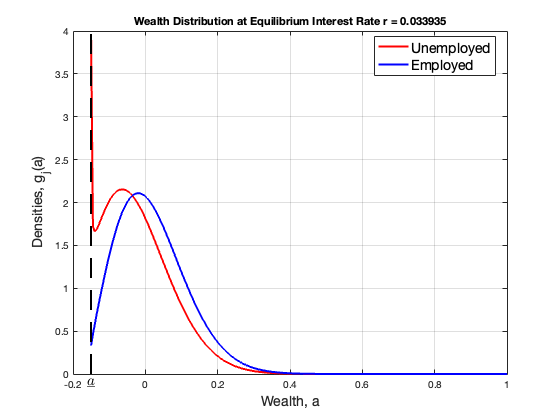

Contents
Add paths to the necessary functions
addpath(genpath('/Users/muhammadbashir/GitHub/MuhammadCourses/DynamicProgramming2024/ProblemSetSolutions/PS4/GE')) addpath(genpath('/Users/muhammadbashir/GitHub/MuhammadCourses/DynamicProgramming2024/ProblemSetSolutions/PS4/Asset Supply')) addpath(genpath('/Users/muhammadbashir/GitHub/MuhammadCourses/DynamicProgramming2024/ProblemSetSolutions/PS4/KF')) addpath(genpath('/Users/muhammadbashir/GitHub/MuhammadCourses/DynamicProgramming2024/ProblemSetSolutions/PS4/HJB'))
1. DEFINE PARAMETERS
p = define_parameters_assetsupply();
2. INITIALIZE GRID POINTS
a = linspace(p.amin, p.amax, p.I)'; da = (p.amax-p.amin)/(p.I-1); aa = [a, a]; % I*2 matrix % %% 2-2. INITIALIZE GRID POINTS FOR INTEREST RATES % rgrid = linspace(p.rmin, p.rmax, p.Ir)';
3. PRE-ITERATION INITIALIZATION
% 3-1. Construct the forward and backward differential operator % Df such that Df*V=dVf and Db such that Db*V=dVb Df = zeros(p.I, p.I); for i = 1:p.I-1 Df(i,i) = -1/da; Df(i,i+1) = 1/da; end Df = sparse(Df); Db = zeros(p.I, p.I); for i = 2:p.I Db(i,i-1) = -1/da; Db(i,i) = 1/da; end Db = sparse(Db); % 3-2. Construct A_switch matrix A_switch = [speye(p.I).*(-p.lambda(1)), speye(p.I).*p.lambda(1); speye(p.I).*p.lambda(2), speye(p.I).*(-p.lambda(2))]; %A_switch = zeros(2*I, 2*I); %for i=1:I % A_switch(i,i) = -lambda(1); % A_switch(i,i+I) = lambda(1); % A_switch(i+I,i) = lambda(2); % A_switch(i+I,i+I) = -lambda(2); %end
3-3. Guess an initial value of the value function
zz = ones(p.I, 1).*p.zz; % I*2 matrix % Define the function to find the zero f = @(r) Huggett_assetsupply(r, p, aa, zz, Df, Db, A_switch, da); % Initial guess for r r_guess = 0.03; % Tolerance and maximum iterations tol = 1e-6; max_iter = 100; % Newton's method for iter = 1:max_iter % Evaluate function and its derivative f_val = f(r_guess); f_prime = (f(r_guess + tol) - f_val) / tol; % Update r using Newton's method r_new = r_guess - f_val / f_prime; % Check for convergence if abs(r_new - r_guess) < tol fprintf('Converged to r = %.6f in %d iterations\n', r_new, iter); break; end % Update guess r_guess = r_new; end if iter == max_iter warning('Newton method did not converge within the maximum number of iterations'); end % Final value of r r = r_new;
Getting all variables at this interest rate
Initial guess for the value function
v0 = p.u(zz + max(r, 0.01) .* aa) ./ p.rho;
V = v0;
% 1. VALUE FUNCTION ITERATION
for n = 1:p.maxit
% 1-1. Compute derivatives of the value function
dVf = Df * V;
dVb = Db * V;
% 1-2. Boundary conditions
dVb(1, :) = p.mu(zz(1, :) + r .* aa(1, :)); % Enforce borrowing constraint a >= a_min
dVf(end, :) = p.mu(zz(end, :) + r .* aa(end, :)); % Enforce upper bound a <= a_max
% 1-3. Compute optimal consumption
cf = p.inv_mu(dVf);
cb = p.inv_mu(dVb);
% 1-4. Compute optimal savings
sf = zz + r .* aa - cf;
sb = zz + r .* aa - cb;
% 1-5. Upwind scheme
If = sf > 0;
Ib = sb < 0;
I0 = 1 - If - Ib;
dV_Upwind = If .* dVf + Ib .* dVb + I0 .* p.mu(zz + r .* aa);
c = p.inv_mu(dV_Upwind);
s = zz + r .* aa - c;
% 1-6. Construct the matrix for the linear system
c_stacked = c(:);
V_stacked = V(:);
% Drift terms
A1 = spdiags(If(:, 1) .* sf(:, 1), 0, p.I, p.I) * Df + spdiags(Ib(:, 1) .* sb(:, 1), 0, p.I, p.I) * Db;
A2 = spdiags(If(:, 2) .* sf(:, 2), 0, p.I, p.I) * Df + spdiags(Ib(:, 2) .* sb(:, 2), 0, p.I, p.I) * Db;
A = [A1, sparse(p.I, p.I); sparse(p.I, p.I), A2];
% Total generator
P = A + A_switch;
% Right-hand side and left-hand side for the linear system
B = (p.rho + 1 / p.Delta) * speye(2 * p.I) - P;
b = p.u(c_stacked) + V_stacked / p.Delta;
% Solve for the updated value function
V_new = B \ b;
V_change = max(abs(V_new - V_stacked));
% Update value function
V = reshape(V_new, p.I, 2);
% Check for convergence
if V_change < p.tol
break;
end
end
% 2. KF EQUATION
% Transpose of generator matrix
P_transpose = P';
% Solve P'*g = 0 with normalization condition
g_stacked = zeros(2 * p.I, 1);
i_fix = 1;
P_transpose(i_fix, :) = zeros(1, 2 * p.I);
P_transpose(i_fix, i_fix) = 1;
g_stacked(i_fix) = 1;
% Solve for the stationary distribution
g = P_transpose \ g_stacked;
% Normalize the distribution
g = g / sum(g * da);
% Reshape to original dimensions
g = reshape(g, p.I, 2);
% Compute asset supply S(r)
S = sum(g(:, 1) .* aa(:, 1) * da) + sum(g(:, 2) .* aa(:, 2) * da);
Converged to r = 0.033935 in 4 iterations
6. GRAPHS
6-1. Optimal consumption
figure set(gca, 'FontSize', 18) plot(a, c(:,1), 'LineWidth', 2, 'LineStyle', '-', 'Color', 'r') hold on plot(a, c(:,2), 'LineWidth', 2, 'LineStyle', '-', 'Color', 'b') hold off grid xlabel('Wealth, a','FontSize', 14) ylabel('Consumption, c_j(a)','FontSize', 14) xlim([p.amin p.amax]) legend('Unemployed', 'Employed', 'Location', 'best', 'FontSize', 14) title(sprintf('Optimal Consumption at Equilibrium Interest Rate r = %.6f', r)) % 6-2. Optimal savings figure set(gca, 'FontSize', 18) plot(a, s(:,1), 'LineWidth', 2, 'LineStyle', '-', 'Color', 'r') hold on plot(a, s(:,2), 'LineWidth', 2, 'LineStyle', '-', 'Color', 'b') hold off grid xlabel('Wealth, a', 'FontSize', 14) ylabel('Saving, s_j(a)', 'FontSize', 14) xlim([p.amin p.amax]) legend('Unemployed', 'Employed', 'Location', 'best', 'FontSize', 14) title(sprintf('Optimal Savings at Equilibrium Interest Rate r = %.6f', r)) % 6-3. Value function figure set(gca, 'FontSize', 18) plot(a, V(:,1), 'LineWidth', 2, 'LineStyle', '-', 'Color', 'r') hold on plot(a, V(:,2), 'LineWidth', 2, 'LineStyle', '-', 'Color', 'b') hold off grid xlabel('Wealth, a', 'FontSize', 14) ylabel('Value function, V_j(a)', 'FontSize', 14) xlim([p.amin p.amax]) legend('Unemployed', 'Employed', 'Location', 'best', 'FontSize', 14) title(sprintf('Value Function at Equilibrium Interest Rate r = %.6f', r)) % 6-4. Wealth distribution figure set(gca, 'FontSize', 14) plot(a, g(:,1), 'LineWidth', 2, 'LineStyle', '-', 'Color', 'r') hold on plot(a, g(:,2), 'LineWidth', 2, 'LineStyle', '-', 'Color', 'b') hold off grid xlabel('Wealth, a', 'FontSize', 14) ylabel('Densities, g_j(a)', 'FontSize', 14) yy = get(gca, 'yLim'); hold on plot([p.amin, p.amin], yy, '--k', 'LineWidth', 2) hold off text(-0.15, yy(1)-0.02*(yy(2) - yy(1)), '$\underline{a}$', 'HorizontalAlignment', 'center', 'FontSize', 15, 'Interpreter', 'latex') xlim([-0.2 1]) legend('Unemployed', 'Employed', 'Location', 'best', 'FontSize', 14) title(sprintf('Wealth Distribution at Equilibrium Interest Rate r = %.6f', r))   